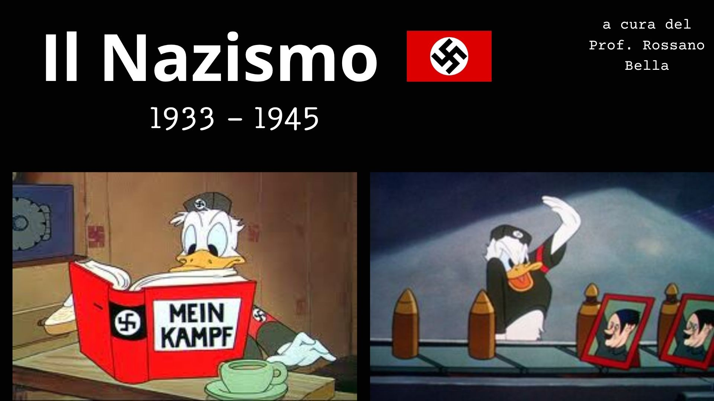

Sezione di studio
Il Nazismo da sapere
Qui trovi le informazioni da studiare (cause, date, ideologia, Shoah). Sotto ogni blocco c’è un trucco per ricordarle. In fondo: le slide Canva del Prof.

1 · Perché sale Hitler?
Il Nazismo non nasce dal nulla. Tre fattori si sommano (1933–1945: dittatura nazista).
- Crisi economica: dopo il 1929, disoccupazione e povertà devastano la Germania. I risarcimenti di Versailles pesano ancora.
- Vergogna e reduci: molti sentono la sconfitta della Grande Guerra come umiliazione. La delusione dei reduci alimenta rabbia e nazionalismo.
- Weimar debole: la Repubblica è formalmente democratica, ma i governi cambiano in continuazione. Le istituzioni non reggono lo scontro.
Ricorda così Senza soldi, senza orgoglio, senza governo stabile: lì nasce il terreno per Hitler.

2 · Come prende il potere?
- 1933: Hitler diventa Cancelliere attraverso il sistema politico (elezioni + alleanze), non con una «marcia» come Mussolini.
- Poi smantella la democrazia: partito unico, repressione degli oppositori, poteri concentrati.
- 1934 — Notte dei lunghi coltelli: elimina i rivali interni. Messaggio: comanda lui, senza rivali nel partito.
Hitler ≠ Mussolini (ascesa)
Mussolini: Marcia su Roma ≈ colpo di forza (1922). Hitler: vince lo spazio elettorale e poi distrugge la democrazia dall’interno.
Ricorda così Entra dalla porta della democrazia, poi chiude la porta dietro di sé.

3 · Ideologia (Mein Kampf)
«Mein Kampf» = «La mia battaglia». Tre pilastri da sapere:
- Teoria della razza: gerarchia inventata; gli «ariani» sopra, ebrei e altri popoli come «nemici».
- Lebensraum (spazio vitale): espandersi a Est per terre e dominio.
- Anti-comunismo e anti-democrazia: bolscevismo e liberalismo come nemici da distruggere.
Ricorda così Tre idee tossiche: chi è «superiore», dove espandersi, chi odiare (comunismo e democrazia).

4 · Shoah: da legge a sterminio
- 1935 — Leggi di Norimberga: gli ebrei esclusi dalla vita pubblica (cittadinanza, matrimoni misti, discriminazione quotidiana).
- Propaganda, violenza e confische preparano la deportazione.
- Durante la guerra: Soluzione finale = sterminio sistematico. Milioni di ebrei, rom, disabili, oppositori e altri gruppi assassinati.
Concentramento ≠ sterminio
- Concentramento (es. Dachau): detenzione, lavoro forzato, fame, violenza; mortalità altissima.
- Sterminio (es. Auschwitz-Birkenau, Treblinka, Sobibor): creato per uccidere su larga scala (anche camere a gas). Molti in Polonia.
Ricorda così Prima la legge (Norimberga), poi lo sterminio (Soluzione finale). L’odio diventa Stato.

5 · Similitudini Fascismo / Nazismo
Sei punti in comune (dal Canva del Prof.):
- Crisi e umiliazione dopo la Grande Guerra
- Propaganda di massa
- Democrazia debole
- Culto del capo (Duce / Führer)
- Violenza politica
- Nazionalismo aggressivo
Ricorda così Stessa ricetta in Italia e Germania: crisi + propaganda + Stato debole + capo-mito + manganello + nazionalismo.
Differenza di potere
Hitler diventa praticamente assoluto. Mussolini deve ancora mediare con il Re (Vittorio Emanuele III).
Timeline lampo
- 1929 crisi → terreno fertile
- 1933 Cancelliere → dittatura
- 1934 Notte dei lunghi coltelli
- 1935 Leggi di Norimberga
- 1939–45 guerra e Shoah
- 1945 fine del Reich · memoria
Materiale di classe
Le slide Canva del Prof.
Presentazione «Il Nazismo» (a cura del Prof. Rossano Bella). Scorri le slide come in classe.

1 / 11